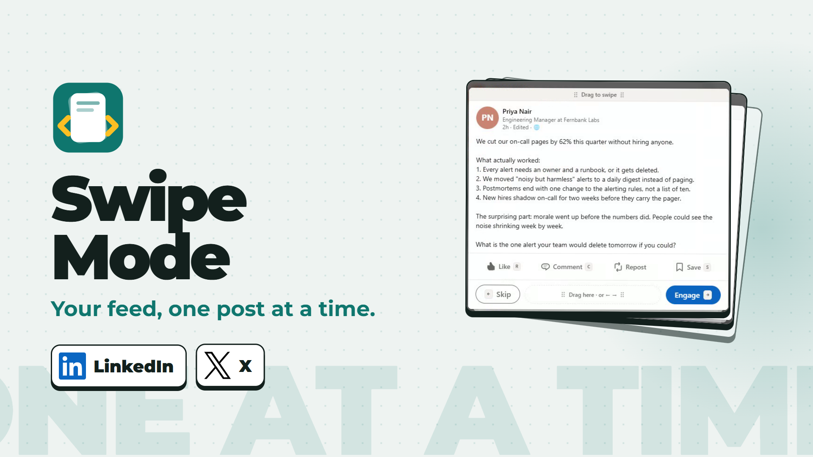
Endless feed stops; one post comes forward; Swipe Mode, LinkedIn and X land.
“Endless scrolling buries the posts you care about. Swipe Mode shows your LinkedIn feed and your X timeline, one post at a time.”
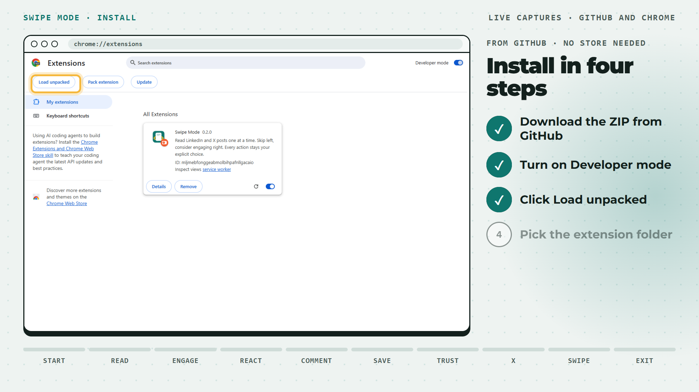
Live captures: your repo with Code → Download ZIP, then chrome://extensions.
“Get it from GitHub. Download the ZIP, turn on Developer mode in Chrome, click Load unpacked, and pick the extension folder.”
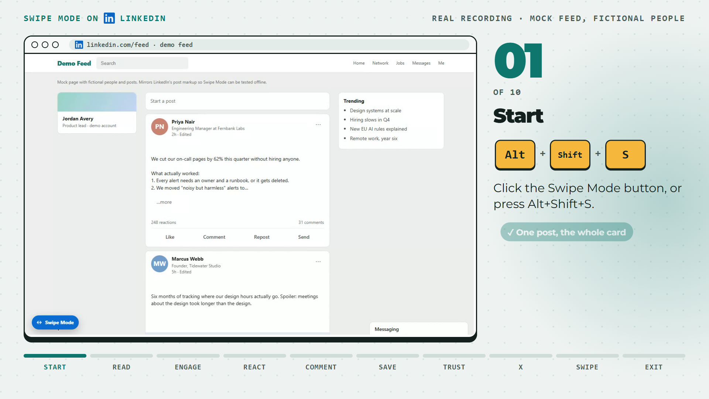
Click the button, or Alt+Shift+S.
“On LinkedIn, click the Swipe Mode button, or press Alt, Shift, S.”
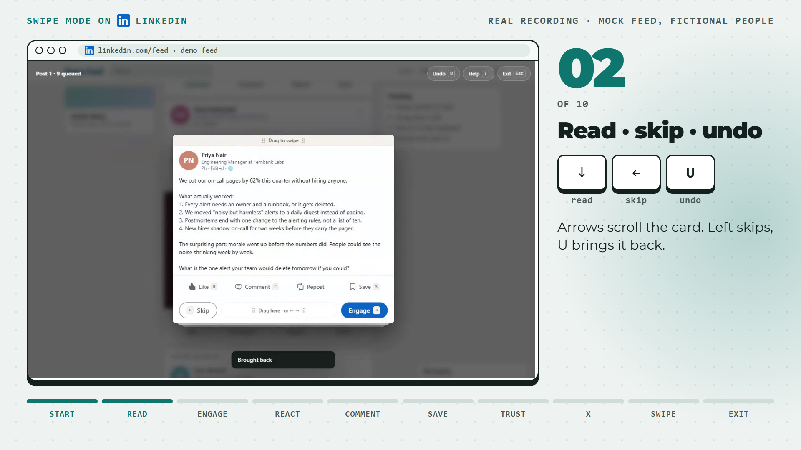
↓ scroll, ← skip, U brings it back; the promoted post is passed over.
“Each post gets the whole card. Arrow keys scroll. Left skips it, U brings it back, and promoted posts stay out of the way.”
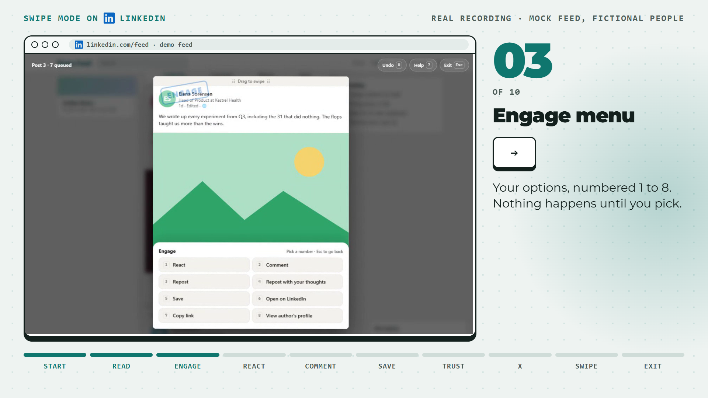
→ opens numbered actions; nothing is sent.
“Right opens your options, numbered one to eight. Nothing happens until you pick.”
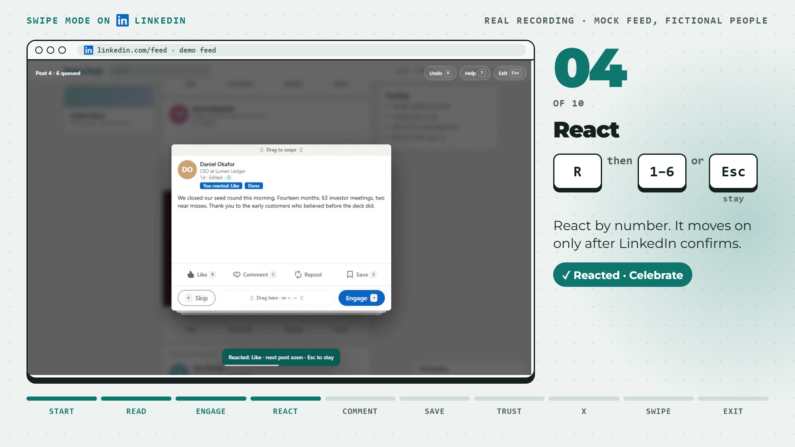
R then 2 reacts Celebrate; Esc keeps the next post for one more action.
“Press R and a number to react. Swipe Mode waits for LinkedIn to confirm, then moves on. Press Escape to stay for one more action.”
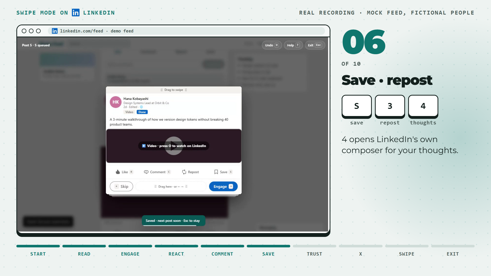
C, Ctrl+Enter, S, 3, then 4 hands over to LinkedIn’s composer.
“C writes a comment, and Control Enter posts it. S saves. Three reposts, and four adds your thoughts in LinkedIn's own window.”
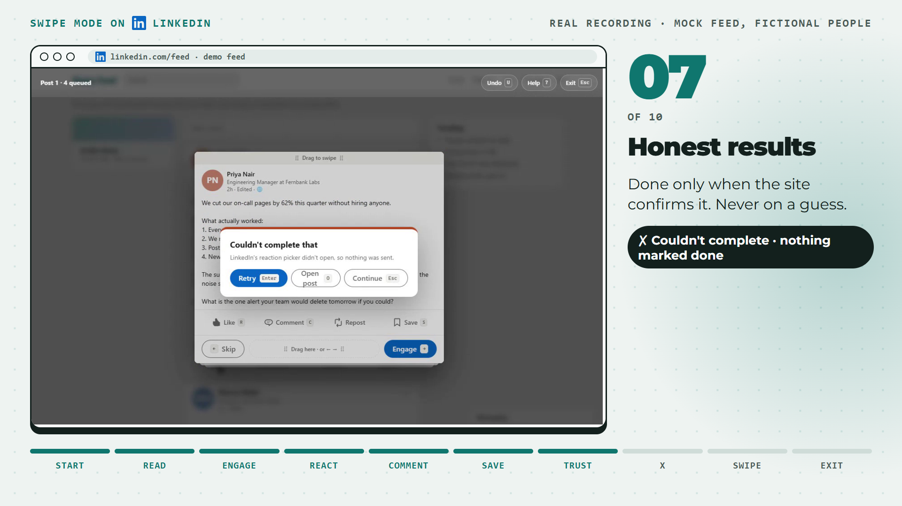
The site didn’t confirm: a clear failure, nothing marked done; the pacing guard holds a too-fast action.
“If the site doesn't confirm, Swipe Mode tells you. Nothing is marked done on a guess, and a pacing guard keeps you at human speed.”
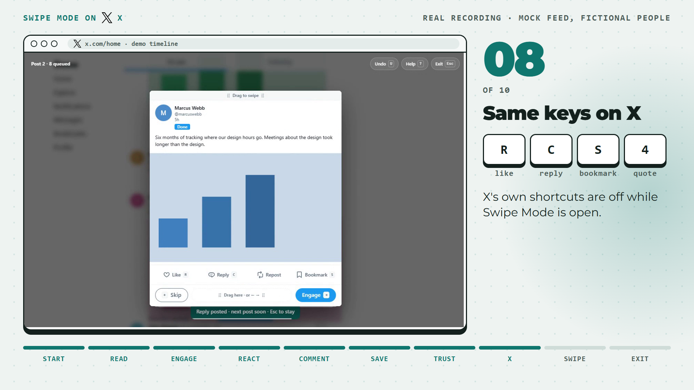
R like, C reply, S bookmark, 4 quote, on the X timeline.
“On X, it's the same keys. R likes, C replies, S bookmarks, and four quotes. X's own shortcuts are switched off, so a stray key never acts on the wrong post.”
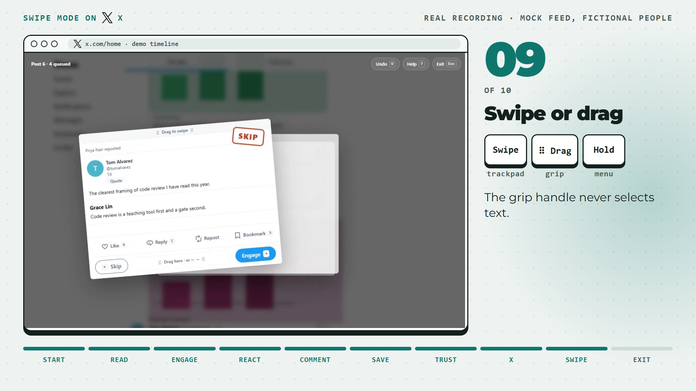
Trackpad swipe, drag the grip handle, long-press for the menu.
“On a trackpad, just swipe. With a mouse, drag the grip handle. It never selects text.”
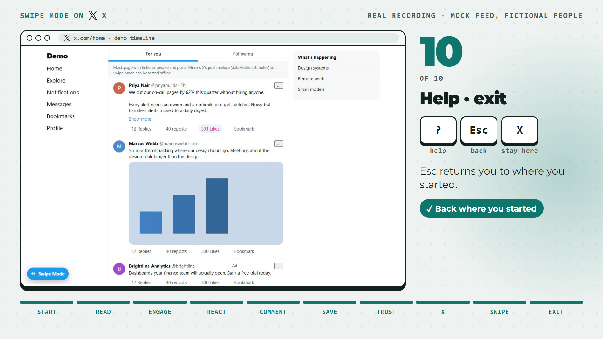
? shortcuts, Esc back to where you started.
“Question mark lists every shortcut. Escape returns you to where you started, and X leaves you on the current post.”
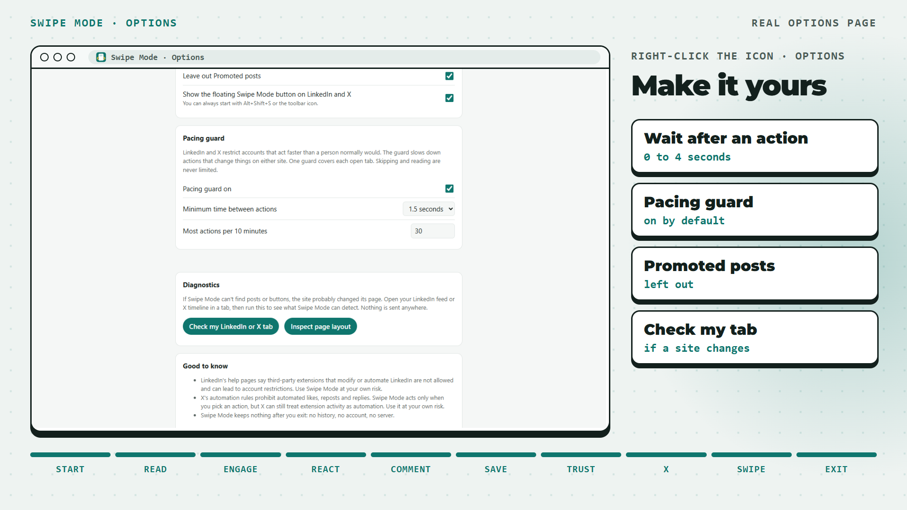
The real Options page: timing, pacing guard, promoted posts, check my tab.
“In Options, tune the timing, keep the pacing guard on, and check your tab if a site changes its layout.”
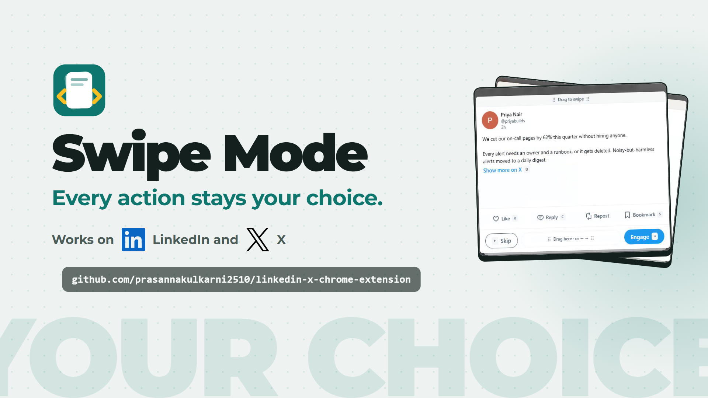
Logo, LinkedIn and X, the GitHub address, “Every action stays your choice.”
“Swipe Mode. Every action stays your choice.”